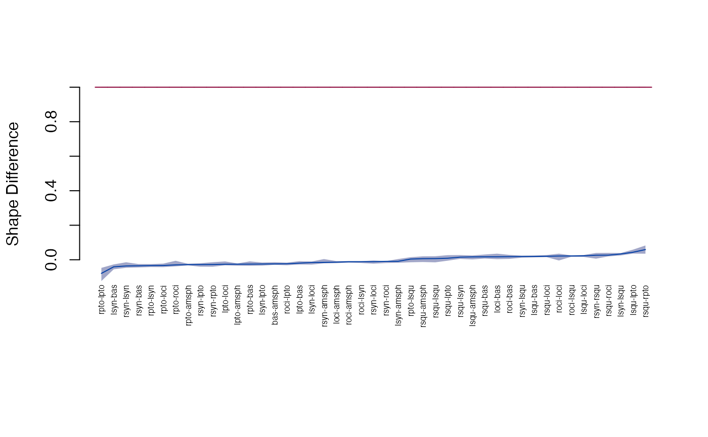

Shape difference
edma_sdm.RdShape difference matrix based inference following Lele and Cole (1996).
edma_sdm(a, b, log=TRUE, size=TRUE, edge = NULL) get_sdm(object, ...) # S3 method for edma_sdm get_sdm(object, sort=FALSE, level = 0.95, ...) # S3 method for edma_sdm print(x, level = 0.95, ...) Z_test(object, ...) # S3 method for edma_sdm Z_test(object, level = 0.95, ...) # S3 method for edma_sdm landmarks(x, ...) # S3 method for edma_sdm dimensions(x, ...) # S3 method for edma_sdm confint(object, parm, level=0.95, ...) # S3 method for edma_sdm get_influence(object, statistic=c("Z", "C"), level=0.95, ...) plot_Ztest(x, ...) # S3 method for edma_sdm plot_Ztest(x, statistic=c("Z", "C"), level = 0.95, ...)
Arguments
| a, b | EDMA fit object to compare shapes. |
|---|---|
| x, object | a SDM object. |
| log | logical, if form matrix is to be log transformed before calculating the differences. |
| size | logical, if size difference (C) is to be estimated ( |
| edge | numeric or character, numeric IDs or the name of the 2 landmarks
to be used to calculate C (C=db/da, where da and db are the edge distances
between the two landmarks for object a and b respectively).
C is calculated using total least squares (TLS) when |
| sort | logical, if stacked distances are to be sorted, see Examples. |
| level | numeric, between 0 and 1, alpha level for confidence interval. |
| parm | a specification of which parameters are to be given
confidence intervals, either a vector of numbers or a vector of names.
See |
| statistic | character, the Z or C statistic to be plotted. |
| ... | other arguments passed to other functions. |
Details
Shape difference matrix (SDM) is defined as
the difference between the scaled form matrices S(A) and S(B).
S(A) = C * FM(A), S(B) = FM(B),
where C is a scaling factor and is calculated using total least
squares (TLS). Shape difference matrix is S(A) - S(B) when log=FALSE
and log(S(A)) - log(S(B)) when log=TRUE.
Inference and visualization is similar to how it is done for FDMs.
Note: the original implementation is usinga particular edge
to calculate the size (C) parameter (size=TRUE and
edge not NULL). edge=NULL uses total least
squares to estimate C based on all the edges of all the landmarks.
When size=FALSE we set C=1, assuming sizez are the same.
Value
edma_sdm compares 2 EDMA fit objects and calculates SDM.
References
Lele, S. R., and Cole, T. M. III., 1996. A new test for shape differences when variance-covariance matrices are unequal. Journal of Human Evolution 31:193--212. <doi:10.1006/jhev.1996.0057>
Author
Peter Solymos, Subhash R. Lele, Theodore M. Cole
See also
Examples
file_a <- system.file("extdata/growth/CZP0_wt_global.xyz", package="EDMAinR") file_b <- system.file("extdata/growth/CZP0_mut_global.xyz", package="EDMAinR") l <- c("amsph", "bas", "loci", "lpto", "lsqu", "lsyn", "roci", "rpto", "rsqu", "rsyn") a <- read_xyz(file_a)[l,,] b <- read_xyz(file_b)[l,,] a#> EDMA data: Crouzon unaffected newborn mouse #> 10 landmarks, 3 dimensions, 11 specimensb#> EDMA data: Crouzon mutant newborn mouse #> 10 landmarks, 3 dimensions, 11 specimens#> EDMA shape difference matrix #> Call: edma_sdm(a = fit_a, b = fit_b) #> 10 bootstrap runs (difference of logarithms) #> #> 2.5% 97.5% #> Z (shape) -0.12654 0.017896 #> C (scale) 1.01543 1.036918Z_test(sdm)#> Bootstrap based EDMA Z-test #> 10 bootstrap runs #> #> 2.5% 97.5% #> Z (shape) -0.1265 0.0179 #> C (scale) 1.0154 1.0369#> 2.5% 97.5% #> bas-amsph -0.034128160 -0.009322468 #> loci-amsph -0.019961567 -0.007855615 #> lpto-amsph -0.033888040 -0.020599951 #> lsqu-amsph 0.001418755 0.025022110 #> lsyn-amsph -0.018710853 0.005579766 #> roci-amsph -0.016104201 -0.005087852#> row col sdm lower upper #> 1 bas amsph -0.02392208 -0.034128160 -0.009322468 #> 2 loci amsph -0.01400145 -0.019961567 -0.007855615 #> 3 lpto amsph -0.02582129 -0.033888040 -0.020599951 #> 4 lsqu amsph 0.01659426 0.001418755 0.025022110 #> 5 lsyn amsph -0.00905969 -0.018710853 0.005579766 #> 6 roci amsph -0.01156002 -0.016104201 -0.005087852#> row col sdm lower upper #> 43 rsqu rpto 0.05906804 0.03740425 0.06531611 #> 25 lsqu lpto 0.04367016 0.03456832 0.05644474 #> 31 lsyn lsqu 0.03351607 0.02539827 0.03798497 #> 41 rsqu roci 0.02675907 0.02077073 0.03603379 #> 45 rsyn rsqu 0.02636038 0.01810031 0.03925941 #> 19 lsqu loci 0.02269395 0.01612142 0.02804453#> row col sdm lower upper #> 28 rpto lpto -0.07900089 -0.12653939 -0.037534952 #> 13 lsyn bas -0.04078567 -0.06262031 -0.016682936 #> 39 rsyn lsyn -0.03605782 -0.04785886 -0.013169865 #> 17 rsyn bas -0.03495021 -0.05930960 -0.008964215 #> 37 rpto lsyn -0.03361166 -0.04098492 -0.025914860 #> 22 rpto loci -0.03326119 -0.04078263 -0.021578853#> landmark Zdrop lower upper #> 1 amsph -0.08151834 -0.12872488 -0.04907878 #> 2 bas -0.07936769 -0.12630054 0.04860477 #> 3 loci -0.07874282 -0.12615859 0.01774435 #> 4 lpto 0.05483618 -0.06551969 0.05985919 #> 5 lsqu -0.07154565 -0.11880187 0.05549367 #> 6 lsyn -0.08022249 -0.12800570 0.01812641 #> 7 roci -0.07798099 -0.12511191 0.01834805 #> 8 rpto -0.04583163 -0.06644098 0.05014521 #> 9 rsqu -0.07155860 -0.11766661 0.02563568 #> 10 rsyn -0.08005630 -0.12809848 -0.04817223plot_Ztest(sdm, "Z")plot_Ztest(sdm, "C")